Amethyst Slime
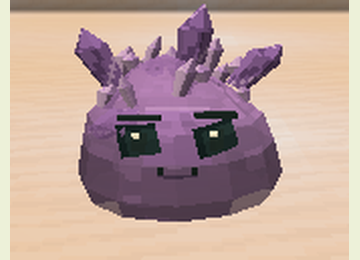
Resonance highlights threats; amethyst blocks prolong the effect.
Temperament: Neutral
Diet: Amethyst Shard, Glow Berries
Acquisition: Natural encounter
slimeevolution:amethyst
|
Common Slime
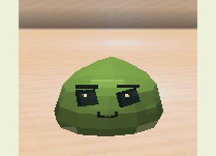
Adaptable, with an unusually elastic jump.
Temperament: Neutral
Diet: Slimeball, Apple, Wheat
Acquisition: Natural encounter
slimeevolution:common
|
Corrupted Slime
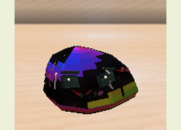
Aggressive; deteriorates targets and increases mutation chance in offspring.
Temperament: Hostile
Diet: Rotten Flesh, Spider Eye
Acquisition: Natural encounter
slimeevolution:corrupted
|
Electric Slime
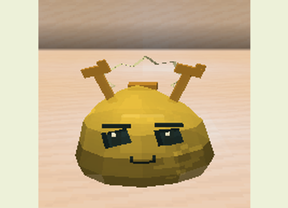
Defends its territory; discharges spread between wet targets.
Temperament: Neutral
Diet: Redstone, Glowstone Dust
Acquisition: Natural encounter
slimeevolution:electric
|
End Slime
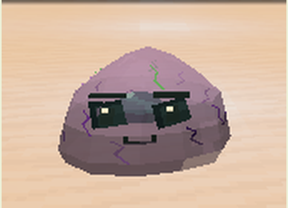
Retreats with a short, safe blink when wounded and threatened.
Temperament: Neutral
Diet: Chorus Fruit, Ender Pearl
Acquisition: Natural encounter
slimeevolution:end
|
Fire Slime
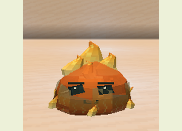
Immune to fire; ignites enemies but is hurt by water.
Temperament: Hostile
Diet: Coal, Blaze Powder
Acquisition: Natural encounter
slimeevolution:fire
|
Fungal Slime
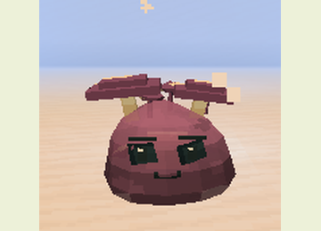
Spores weaken threats; nearby mushrooms aid recovery.
Temperament: Docile
Diet: Brown Mushroom, Red Mushroom
Acquisition: Natural encounter
slimeevolution:fungal
|
Ice Slime
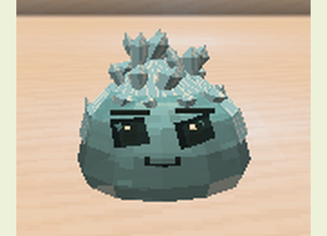
Chills enemies, resists freezing and is vulnerable to fire.
Temperament: Hostile
Diet: Snowball, Ice
Acquisition: Natural encounter
slimeevolution:ice
|
Iron Slime
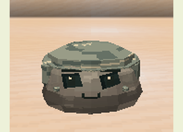
A heavy body that resists melee blows and knockback.
Temperament: Neutral
Diet: Iron Nugget, Raw Iron
Acquisition: Natural encounter
slimeevolution:iron
|
Luminous Slime
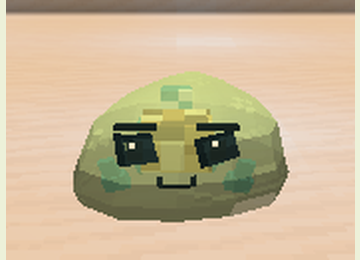
An emissive body; helps its caregiver see in dark caves.
Temperament: Docile
Diet: Glow Berries, Glow Ink Sac
Acquisition: Natural encounter
slimeevolution:luminous
|
Magma Slime
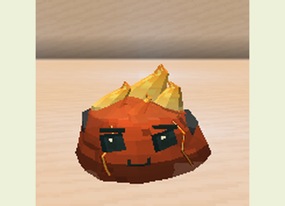
Recovers in lava and ignites enemies while heated.
Temperament: Hostile
Diet: Magma Cream, Blaze Powder
Acquisition: Natural encounter
slimeevolution:magma
|
Moss Slime
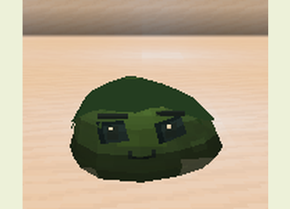
Regenerates while wet or resting on moss.
Temperament: Docile
Diet: Moss Block, Glow Berries
Acquisition: Natural encounter
slimeevolution:moss
|
Mud Slime
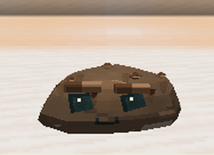
Defends itself by slowing attackers.
Temperament: Neutral
Diet: Mud, Clay Ball
Acquisition: Natural encounter
slimeevolution:mud
|
Obsidian Slime
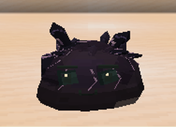
A slow, heavy body protected against explosions.
Temperament: Neutral
Diet: Obsidian, Crying Obsidian
Acquisition: Natural encounter
slimeevolution:obsidian
|
Sand Slime
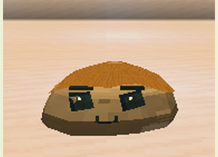
Blends into sand while still and blinds enemies with dust.
Temperament: Neutral
Diet: Sand, Cactus
Acquisition: Natural encounter
slimeevolution:sand
|
Soul Slime
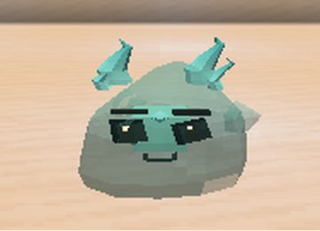
Moves freely on soul sand; siphons vitality over soul terrain.
Temperament: Neutral
Diet: Soul Sand, Soul Soil
Acquisition: Natural encounter
slimeevolution:souls
|
Stone Slime
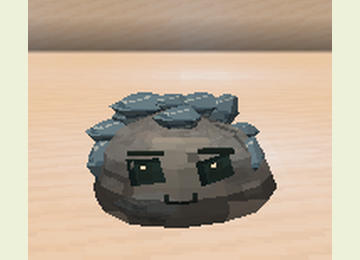
Heavy armor and knockback resistance, at the cost of speed.
Temperament: Neutral
Diet: Cobblestone, Flint
Acquisition: Natural encounter
slimeevolution:stone
|
Venom Slime
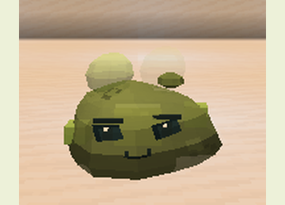
Defends its territory with a short-lived toxic cloud.
Temperament: Neutral
Diet: Spider Eye, Brown Mushroom
Acquisition: Natural encounter
slimeevolution:venom
|
Void Slime
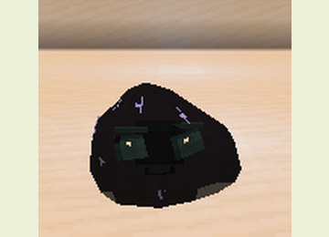
Pulls a visible nearby threat with a brief spatial impulse.
Temperament: Neutral
Diet: Popped Chorus Fruit, Ender Pearl
Acquisition: Natural encounter
slimeevolution:void
|
Water Slime
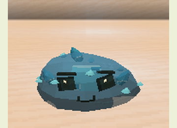
Swims efficiently, breathes underwater and pushes enemies with water jets.
Temperament: Docile
Diet: Kelp, Seagrass
Acquisition: Natural encounter
slimeevolution:water
|
Wind Slime
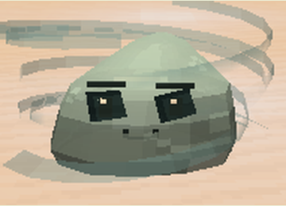
Jumps higher, cushions falls and pushes enemies with gusts.
Temperament: Neutral
Diet: Feather, Sugar
Acquisition: Natural encounter
slimeevolution:wind
|
Abyssal Slime
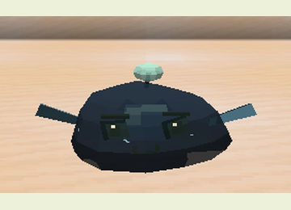
A luminous lure guides its dark body and deep-water fins.
Temperament: Neutral
Diet: Glow Ink Sac, Kelp
Acquisition: Metamorphosis from Glacial Aquatic
slimeevolution:abyssal
|
Amber Slime
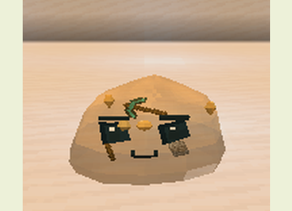
Golden resin surrounds a stick, cobblestone and a decorative pickaxe; its touch is sticky.
Temperament: Docile
Diet: Honeycomb, Wheat
Acquisition: Metamorphosis from Moss
slimeevolution:amber
|
Ancestral Slime
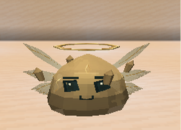
An advanced metamorphosis that briefly protects a wounded keeper.
Temperament: Docile
Diet: Golden Carrot, Glistering Melon Slice
Acquisition: Metamorphosis from Void
slimeevolution:ancestral
|
Aurora Slime
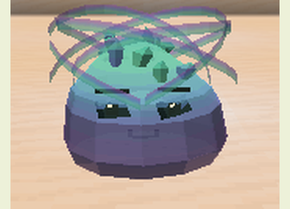
A gradient of colors and an animated aurora protect nearby allies.
Temperament: Docile
Diet: Amethyst Shard, Glowstone Dust
Acquisition: Metamorphosis from Prismatic
slimeevolution:aurora
|
Bog Slime
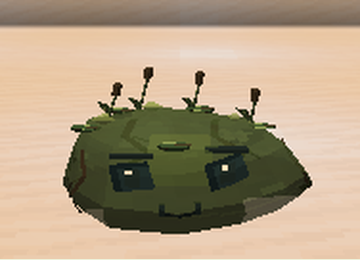
A docile moss-and-mud hybrid that slows attackers.
Temperament: Docile
Diet: Clay Ball, Glow Berries
Acquisition: Moss + Mud; Moss + Water
slimeevolution:bog
|
Caustic Slime
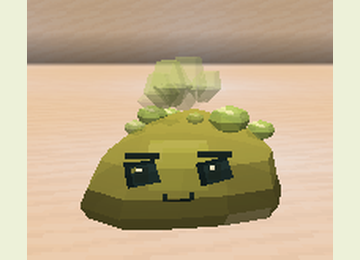
Its bubbles leave temporary acid pools that weaken enemies.
Temperament: Hostile
Diet: Spider Eye, Magma Cream
Acquisition: Venom + Magma
slimeevolution:caustic
|
Celestial Slime
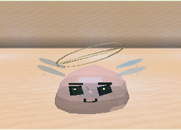
A rare Ancestral metamorphosis using Primordial essence and high stability.
Temperament: Docile
Diet: Golden Carrot, Glistering Melon Slice
Acquisition: Metamorphosis from Ancestral
slimeevolution:celestial
|
Coral Slime
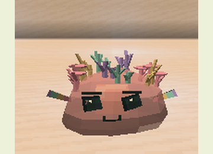
A cluster of branching corals helps allies recover in water.
Temperament: Docile
Diet: Seagrass, Kelp
Acquisition: Water + Floral
slimeevolution:coral
|
Crystal Slime
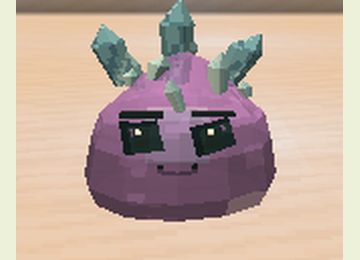
Fires crystal shards while retaining mineral protection.
Temperament: Neutral
Diet: Amethyst Shard, Quartz
Acquisition: Metamorphosis from Stone
slimeevolution:crystal
|
Eclipse Slime
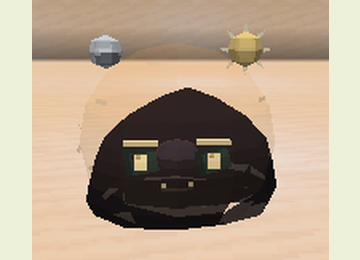
A dark silhouette surrounded by a golden corona alternates solar and lunar attacks.
Temperament: Neutral
Diet: Blaze Powder, Amethyst Shard
Acquisition: Solar + Lunar
slimeevolution:eclipse
|
Energized Crystal Slime
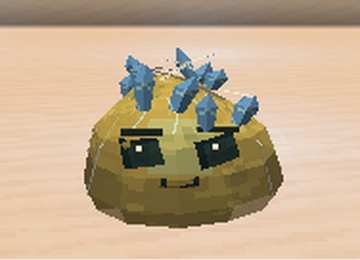
Crystal and Electric share one cooldown for shards and discharge.
Temperament: Neutral
Diet: Amethyst Shard, Redstone
Acquisition: Crystal + Electric
slimeevolution:energized_crystal
|
Ferrofluid Slime
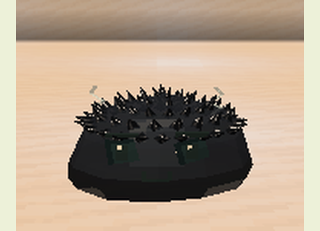
Moving metallic spikes attract metal items dropped by its keeper.
Temperament: Neutral
Diet: Iron Nugget, Raw Iron
Acquisition: Iron + Water
slimeevolution:ferrofluid
|
Floral Slime
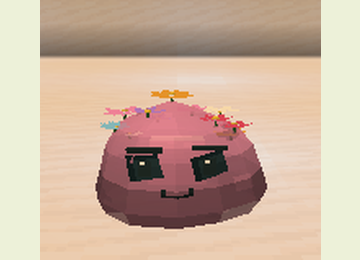
A flowering moss form that regenerates more frequently.
Temperament: Docile
Diet: Glow Berries, Dandelion
Acquisition: Metamorphosis from Moss
slimeevolution:floral
|
Glacial Aquatic Slime
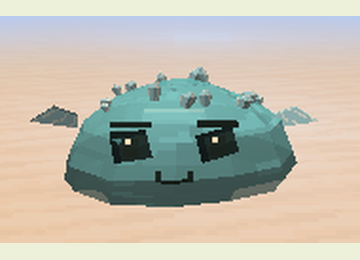
Water and Ice combine a chilling jet with aquatic movement.
Temperament: Neutral
Diet: Kelp, Snowball
Acquisition: Water + Ice
slimeevolution:glacial_aquatic
|
Glass Slime
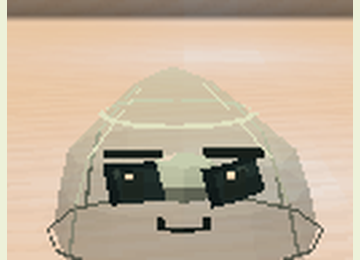
Transparent gel with vitrified edges that refract light and projectiles.
Temperament: Neutral
Diet: Sand, Quartz
Acquisition: Sand + Fire
slimeevolution:glass
|
Hive Slime
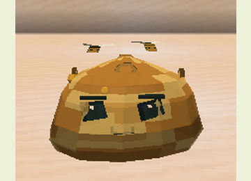
Dripping honeycombs shelter bees and small temporary pollinators.
Temperament: Docile
Diet: Honeycomb, Dandelion
Acquisition: Metamorphosis from Amber
slimeevolution:hive
|
Lunar Slime
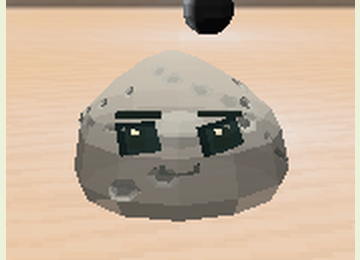
Silvery gel with craters and a full moon; its light helps allies at night.
Temperament: Docile
Diet: Amethyst Shard, Glow Berries
Acquisition: Metamorphosis from Luminous
slimeevolution:lunar
|
Magmatic Slime
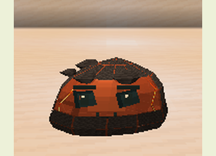
Heat inherited from fire, with a mineral-reinforced body.
Temperament: Neutral
Diet: Magma Cream, Blaze Powder
Acquisition: Stone + Fire; Metamorphosis from Fire
slimeevolution:magmatic
|
Mycelium Slime
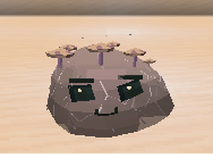
Filaments and mushrooms spread regenerative spores among allies.
Temperament: Docile
Diet: Brown Mushroom, Moss Block
Acquisition: Fungal + Moss
slimeevolution:mycelium
|
Prismatic Slime
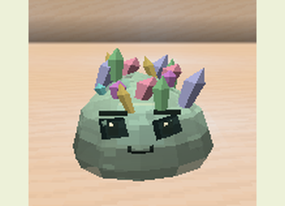
A rare Crystal metamorphosis with a Colossus trophy and high luminosity.
Temperament: Neutral
Diet: Amethyst Shard, Quartz
Acquisition: Metamorphosis from Crystal
slimeevolution:prismatic
|
Sculk Slime
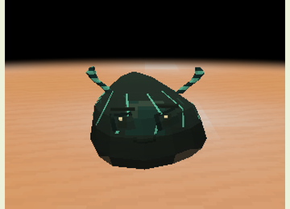
Warden-like horns detect movement and answer with echo pulses.
Temperament: Hostile
Diet: Echo Shard, Glow Ink Sac
Acquisition: Metamorphosis from Corrupted
slimeevolution:sculk
|
Solar Slime
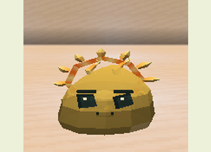
A white-gold core sustains fiery rays and recovery in sunlight.
Temperament: Neutral
Diet: Blaze Powder, Golden Carrot
Acquisition: Metamorphosis from Fire
slimeevolution:solar
|
Steam Slime
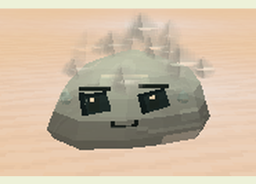
A hybrid of Fire and Water that clouds an opponent’s sight.
Temperament: Docile
Diet: Kelp, Blaze Powder
Acquisition: Fire + Water
slimeevolution:steam
|
Storm Slime
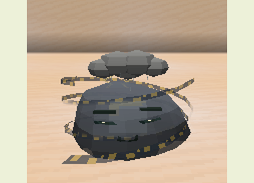
Combines air currents with electrical discharges.
Temperament: Hostile
Diet: Redstone, Feather
Acquisition: Electric + Wind
slimeevolution:storm
|
Supercell Slime
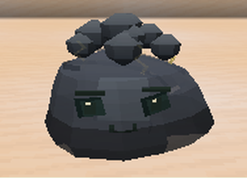
A mature storm cloud with wind rings and chained discharges.
Temperament: Hostile
Diet: Redstone, Feather
Acquisition: Metamorphosis from Storm
slimeevolution:supercell
|
Volatile Flame Slime
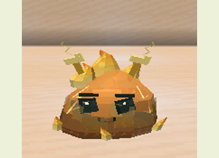
Wind and Fire combine a fiery gust, fire immunity and a water weakness.
Temperament: Hostile
Diet: Blaze Powder, Feather
Acquisition: Wind + Fire
slimeevolution:volatile_flame
|